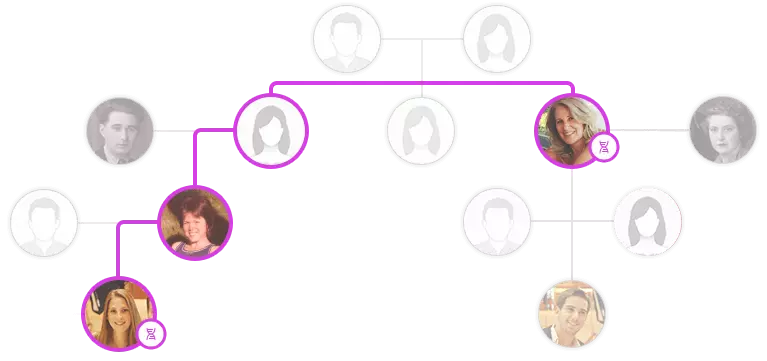

要不要为家谱网站掏钱？一篇把 MyHeritage 订阅账算到底的文
从免费版能干嘛、三个付费档位差在哪、到轻度用主力用重度用各自划不划算，把 MyHeritage 的订阅选择一次性算清楚。
它到底值不值得掏钱？这是我盯着 MyHeritage 订阅页犹豫了整整三天的问题。一边是照片上色、智能树匹配这些听起来很香的功能，另一边是订阅费数字在那摆着，我得先搞明白自己到底能用到什么程度，再决定要不要把钱掏出去。
先说说我对这款软件的第一印象——它的核心是家谱搭建平台，全球数千万棵用户树堆在后台，配合照片增强、DNA 亲缘匹配这些工具，把"整理家族史"这件事从一个人的孤独工程，变成了能和全球陌生人数据碰撞的协作网络。MyHeritage官网上对它的功能描述就是这套逻辑。我一开始只是想给自己家搭个简单的树，结果越挖越深，从免费版被推着走到了订阅门槛前。
定价拆解：三个档位到底差在哪
MyHeritage 不是"付一笔钱解锁全部"的粗暴模式，它沿着四条能力线做了递进，理解了这个结构，就能对照自己的使用场景对号入座。
入门档给的是家谱人数上限的扩展（免费版是 250 人，入门档升到数千级）、有限的历史记录全文访问，以及基础的照片工具额度。中档把树人数拉得更高、记录访问权限放得更开、照片工具额度也更充足。全量档是真正的"全家桶"——家谱人数无限制、历史记录全库访问、高级 DNA 工具（染色体级分析、自动聚类分组、关系理论推断这些都在这条线）、优先客服，以及大额的照片工具包。
还有一个容易被忽略的专项档：只买照片工具的独立订阅。如果你根本不想搭树、也不关心 DNA，纯粹就是拿着老照片来上色修复，那专项档比任何综合性档位都划算。我认识一个朋友就是这个情况——他用了半年照片专项，修好的爷爷奶奶结婚照被叔伯们抢着存，花的钱不到全量档的三分之一。
这个定价逻辑其实挺鸡贼的。它把"搭树"、"查档案"、"DNA 玩票"、"修照片"这四种需求拆成了独立的升级路径，不让你为用不到的功能多掏钱。但反过来也意味着，如果你同时想做两三件事，升级成本叠加起来就不低了。
三类人，三种账
算账得看使用强度，不同频率的用户，同一笔订阅费的"单位时间成本"差得很。
轻度用户：先别急着付
轻度用户大概是这样的状态：偶尔想起来登上去补几个名字、翻一翻免费能看的那点档案、修一两张照片玩。对这类人来说，免费版的 250 人树、有限记录访问，其实够用了。真被卡住的时候，按月付试一个月，用完就取消，比年付划算得多。
我自己就是先这样用了三个月，直到树长到快 200 人、Smart Matching 每天推三五个提示、我开始需要全文访问档案影像来验线索——这时候才感到了免费版的天花板。那段时间的总投入：零。
主力用户：入门档打底，看需求往上推
主力用户的特征是：每周至少登一次、树已经几百人甚至上千、开始在意智能匹配的线索质量、对照片工具有稳定需求。这类人最纠结的是"入门档够不够"还是"直接上全量档一步到位"。
我的判断是：如果你还没做 DNA 检测，入门档足够。家谱搭建和档案检索的核心能力在入门档就解锁了，Smart Matching 也不受档位限制——平台那几千万棵用户树的自动比对，不管你是免费还是付费都一直在跑。区别只在于你能不能看到更全的档案内容、照片工具能用多少额度。
如果你已经做了 DNA 检测，或者正打算做，那就跳全量档。高级 DNA 工具（自动聚类分组、关系理论推断、染色体浏览器这些）是全量档独占的，它们能把 DNA 匹配的"你和他有亲戚"推进到"你们可能隔了几代、经哪条线搭上的"——这是主力玩家真正在乎的能力。DNA 检测本身是一次性投入，后续解读和验证就要靠订阅工具了，具体怎么用可以去MyHeritage文档翻一下。
重度用户：全量档，年付
重度用户要么是家族史爱好者、要么是有专业研究需求的人。他们的树动辄数千人，Smart Matching 提示上百条，需要大量记录访问来逐一验证，照片工具用起来像喝水一样自然。对这类人来说，全量档的"无限制"本身就是最值钱的东西——你不想被某个额度卡着、不想因为某个功能不够而去外面找替代工具。
还有一个重要的省钱技巧：年付比月付便宜不少，黑五、家史主题纪念日还有半价级折扣。不急的话等促销窗口入手，能省出两三个月的订阅费。
不付这笔钱，还有别的路吗
当然有，但每条替代方案都带着代价。
搭树这件事，免费替代品不止 MyHeritage 一家。很多人会用免费的家谱软件先把数据整理好，再决定要不要搬到付费平台。不过要注意，免费平台没有 Smart Matching 那几千万棵用户树的自动比对能力，也没有集中的档案库让你直接查原文影像——你得自己跑档案馆、翻家谱书、找亲戚要线索，速度慢得多。
照片修复这块，其实有不少免费或低门槛的独立工具能做简单的上色和增强。但批量处理、老照片划痕修复、人物面部细化这些进阶效果，免费工具要么没有、要么效果差远了。如果你手里只有三五张老照片，用免费工具就够；如果有一整个相册需要处理，MyHeritage 的专项订阅反而比你一张张找免费工具省时间——安装包从官方下载拿到手后就能直接开用。
DNA 检测后的解读，免费版能看到匹配列表，但你没工具去做深入分析。替代方案是把检测数据导入其他平台做第三方解读，但这操作门槛就高了，而且数据导出还有格式兼容性问题。
还有一种"降低使用频率"的策略：不是不用，而是攒一段时间集中用一次。比如半年登三个月，其他时间放着——这样能把连续订阅的压力降下来，但前提是你真的能忍住半年不动你的树，而不是看着 Smart Matching 每天推提示手痒。
最后的结论，三类人对号入座
算账的核心其实只有一个问题：你在 MyHeritage 上的投入，最终换来了什么？是省了无数次跑档案馆的时间，还是让你的家族史真正能和全球数据碰撞出结果，还是仅仅偶尔修张照片图个新鲜？
我的建议是这样分：
闭眼付的： 已经做了 DNA 检测、树已经几百人、Smart Matching 每天都能推线索、每周至少登两次的。直接全量档年付，等个促销窗口买，这笔钱换回来的是整个家族史研究效率的质变。
再等等的： 树还没长到 200 人、只是偶尔补名字、对 DNA 还在犹豫的。先用免费版攒着，等 Smart Matching 开始频繁推、或者你确定要做 DNA 检测了再升级。别为了"听起来酷"的功能提前买单，你大概率用不上。
永远不用付的： 只有三五张老照片要修、或者只是想偶尔看看家谱长什么样、没有长期搭建计划的。免费版或者替代工具完全够用，付了钱也是浪费。
我自己最后的选择是：先上了入门档三个月，用这三个月把树从 200 人推到了 800 多人，Smart Matching 给我推了十几条真的验出来的线索，其中一条把我爷爷的父亲的名字填上了——那是我爸都不知道的信息。三个月后我升级到全量档年付，刚好赶上了家史主题促销。这笔钱值不值？我算过：三个月里省下的跑档案馆查资料的时间，至少有三四十个小时，按我工作时薪算，这笔订阅费早就赚回来了。
不过话说回来，MyHeritage 还有一个容易被忽略的玩法——邀请家人加入家庭站。家庭成员不需要付费订阅，免费账号就能参与协作补树、上传照片。我把我爸和我堂姐都拉进来了，他俩一个管 paternal 那边、一个管 maternal 那边，每人补了至少 100 条信息。等于我一个人付钱，全家一起用，人均成本就更低了。这个协作功能我真的挺喜欢的——它把一个人的家谱工程，变成了全家接力的事情。关于 MyHeritage 的整理资料，我分别在GitHub、Gitee、GitCode 做了多仓备份，方便不同平台的朋友访问。
